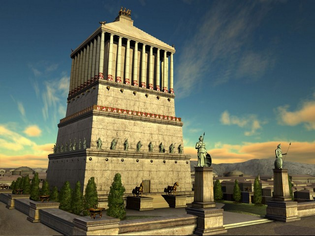

Гробница правителя Карии Мавсола стала настолько величественной, что само имя «Мавсол» превратилось в нарицательное слово «мавзолей» — так стали называть все монументальные гробницы.
Сооружение сочетало в себе элементы греческой, египетской и ближневосточной архитектуры. Над ним работали четыре знаменитых скульптора: Скопас, Бриаксис, Тимофей и Леохар. Каждый из них украсил одну из сторон фасада своими скульптурными композициями.
Мавзолей простоял более 16 веков, постепенно разрушаясь от землетрясений. Окончательно разобран рыцарями-госпитальерами в XV веке для строительства крепости Св. Петра.
Фрагменты скульптур и архитектурного декора сохранились до наших дней и экспонируются в Британском музее в Лондоне, а также в Археологическом музее Бодрума (на месте древнего Галикарнаса).